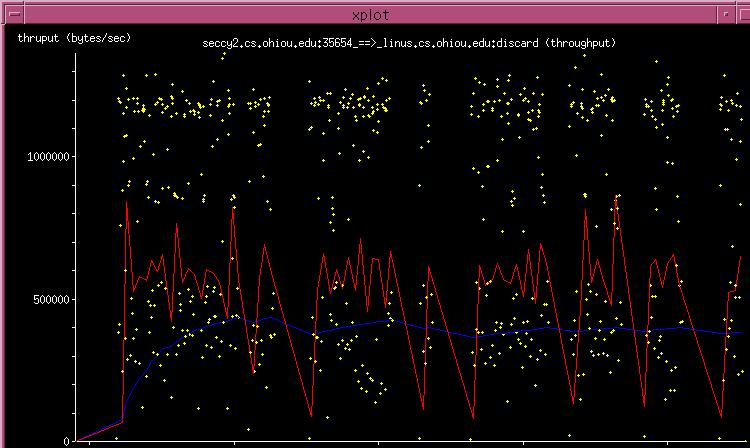

Throughput Graph
Throughput graphs (named X2Y_tput.xpl) are generated with the
-T option. A sample throughput graph is shown in Figure 5.9.
Figure 5.9:
Throughput Graph
|

|
The graph has throughput in bytes/second on the Y-axis and time on the X-axis.
- Yellow Dots represent instantaneous throughput, defined as the
size of the segment seen divided by the time since the last segment was seen
(in this direction).
- Blue Line tracks the average throughput of the connection
up to that point in the life time of the connection (total bytes seen / total
seconds so far).
- Red Line tracks the throughput seen from
the last few samples, calculated as the average of N previous yellow dots.
By default the line tracks the past 10 samples (N=10). However it can be
changed with the -AN option. For example giving -A5 along
with the -T option calculates the throughput from the past 5 yellow
dots to draw the line.
Due to clock granularity, there tends to be a lot of
banding of the dots. If you find the yellow dots annoying, you may turn them
off with the -y option.
Super-User
2003-08-29